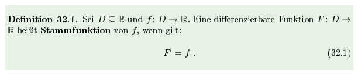
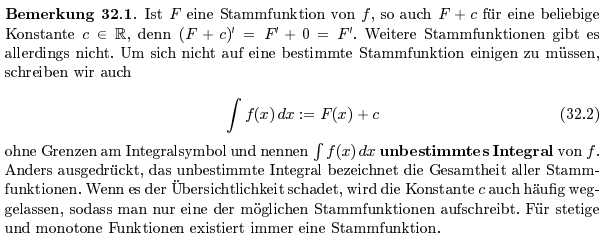

In diesem Beispiel möchten wir Zeigen, wie wir uns interaktive multimediale Lernumbegungen in ihrer einfachsten Form vorstellen.
Wir fangen mit einem Warm-Up Quiz wie sie in der MfPII Lehrveranstaltung im SoSe14 gebräuchlich sind an.
Im folgenden sollen die Studierenden Ihr Wissen zum Thema Stammfunktionen überprüfen. Sie können dieses Multiple-Choice-Quiz so oft ausfüllen wie Sie möchten. Nur wenn alle Kreuze richtig gesetzt sind wird das Quiz als korrekt gelöst angesehen.
Bisher gibt es noch keine Programmlogik in diesen eduZOO Seiten. Der Studierende ist also selber angehalten, sein eigenen Wissensstand einzusätzen und mit dieser Erkenntnis umzugehen.
Gegenbeispiele oder andere Hinweise zur korrekten Lösung werden auf der selben Seite weiter unten angezeigt. Ob der Studierende schummelt muss er/sie selbst entscheiden.
Markiere die richtigen Aussagen.
1. Sei f : ℝ → ℝ stetig und sei F eine Stammfunktion von f. Dann gilt:
Um sich davon zu überzeugen, dass Aussage 1 richtig ist, reicht die Definition 32.1 aus dem Scherfner-Skript:

Das Aussage 2 falsch und Aussage 3 richtig ist, findet man leicht mit:

Aussage 4 ist richtig, da Differentiation und Integration lineare Abbildungen sind.
Von der Falschheit der Aussagen 5 und 6 überzeuge man sich mit dem Beispiel F = x und F' = f = 1.
Von der Falschheit der Aussage 7 überzeuge man sich mit dem Beispiel F = ½x2 und F' = f = x.
Der Satz 32.1 aus dem Scherfner-Skript überzeugt einen schlussendlich, dass Aussage 8 richtig ist:
Außerdem basteln wir grade ein Quiz für reguläre Ausdrücke, so dass Studierende Lösungen von Übungsaufgaben in diesen eduZOO Seiten überprüfen können.
Für Übungsaufgaben, deren Lösung eine Zahl ist geht das bereits jetzt. Gerade dieser Fall tritt ja bei bestimmten Integralen häufig auf.
Was (noch) fehlt, ist eine